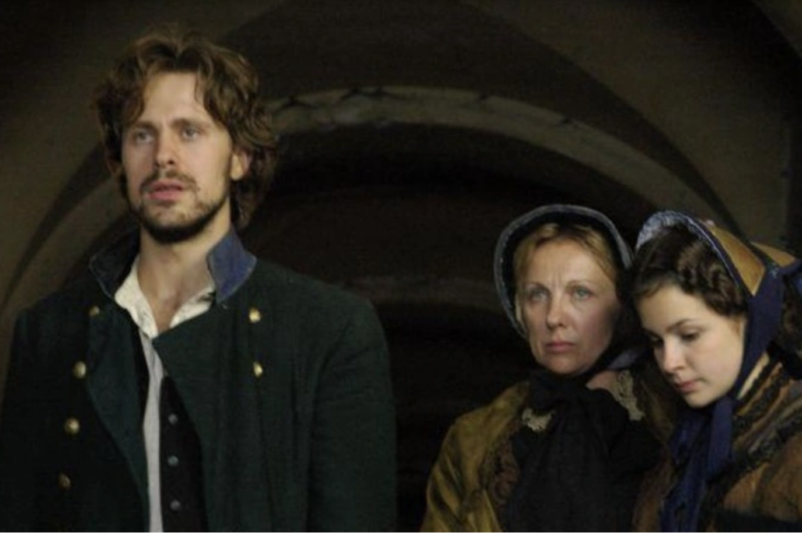
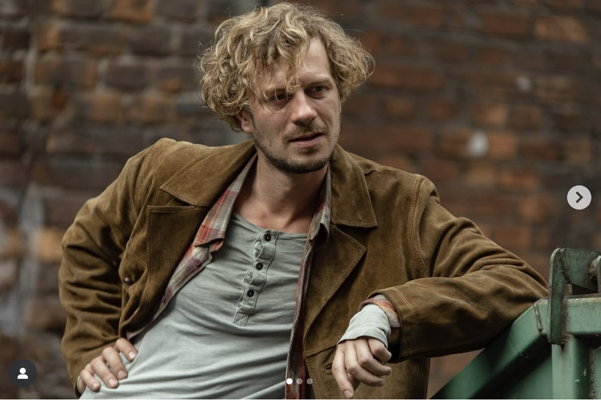
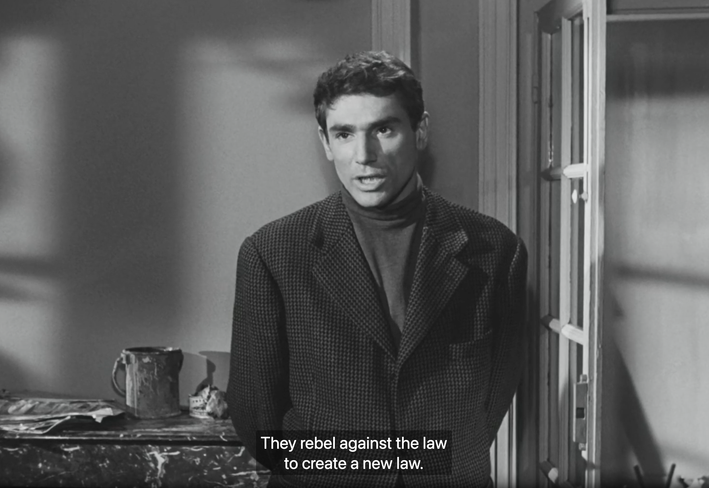

Crime and Punishment. Part III notes
- ch 1
Raskolnikov sends away his mother, sister, and Razumikhin

Figure 1. Razumikhin, Dunya Raskolnikova, and Raskolnikov's mother
in the 2007 Russian tv series Crime and Punishment
- ch 2
the narrative focus moves away from Raskolnikov
Razumikhin is the focus now.
Razumikhin has his dream (in love with Dunya) (210)
Raz about R: "as if there really were two opposite characters to him,
changing places with each other" (215).
Luzhin's letter: demand to betray the brother, lies about R and Sonia (219-220)

Figure 2. Razumikhin in the 2024 Russian
tv series Crime and Punishment
- ch 3 Dunya and mom visit Razumikhin
monomaniac (223)
Marfa's murder (228)
Dunya's watch marfa's gift (230)
mom: your apartment is a coffin (231)
scandal scene: Dunya's marriage.
Dunya: At least I didn't kill anyone (233)
Dunya decides to invite Rodion despite Luzhin's demand not to invite him.
- Ch 4
After Dunya's decision to keep Rodion, Sonia arrives (236)
- Ch 5 First meeting with Porfiry (out of 3)
discussion of Raskolnikov's article
Porfiry: Do you believe in God? in Lazarus resurrection? (261)
R figures out Porfiry's trap (a question about painters, if he saw them, he was at the crime scene between 7 and 8PM on the night of the murder)

Figure 3. Raskolnikov from French adaptation of Crime and Punishment (1956)
- Ch 6
R admits that he suffers too much to be an extraordinary. Maybe he is a "trembling creature"?
nightmare #3 killing the old lady (276-78)
frame of part 3: opens with Sonia and ends with Svidrigailov